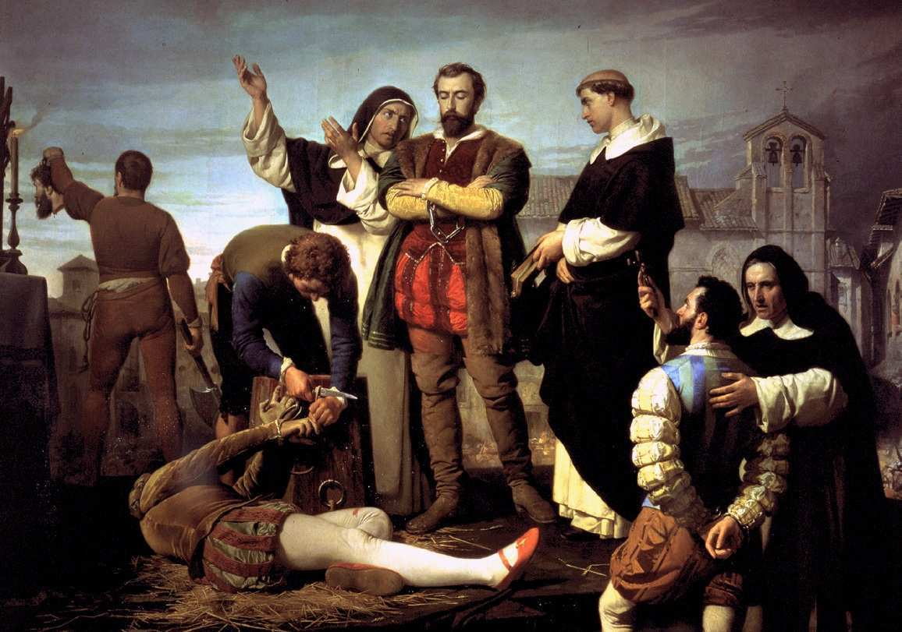
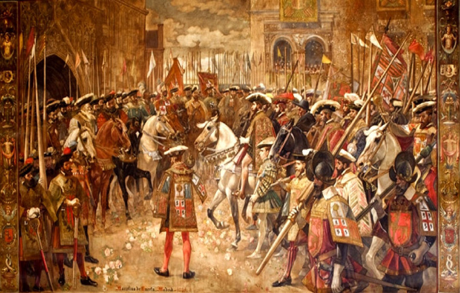

En 1516 muere Fernando el Católico, rey de Aragón y regente de Castilla. Su hija Juana tenía problemas mentales desde la muerte de su esposo Felipe en 1506 así que Fernando se hizo cargo de la regencia del reino. Su segundo matrimonio con Germana de Foix no tuvo descendencia, por ello, Juana hereda también la Corona de Aragón. Carlos, hijo primogénito de Juana y Felipe, se hace cargo de los reinos. Ya era duque de Borgoña y conde de Flandes por la muerte de su padre aunque Juana seguirá siendo reina hasta su muerte en 1555. En 1517 llega a la Península acompañado de los nobles flamencos que formaban su corte de Bruselas, Guillermo de Croy y Adriano de Utrecht (humanista y papa en 1522-23: Adriano VI).
Se convocan Cortes para jurarlo como rey pero hay recelos porque no habla castellano y su séquito es casi exclusivamente flamenco (eran muy rapaces). En 1519 muere su abuelo Maximiliano y Carlos se plantea ser emperador pero necesita dinero para comprar a los electores. El dinero se lo presta el banquero alemán Jakob Fugger aunque no es suficiente, convoca Cortes en Galicia para conseguirlo. Las ciudades se opusieron al "servicio", pero sus procuradores fueron sobornados y votaron a favor. Al regresar a sus ciudades estallaron revueltas y algunos procuradores fueron asesinados.
Carlos se marchó a Alemania, donde fue coronado emperador en 1520 y dejó como regente de Castilla a Adriano de Utrecht. Mientras tanto la revuelta se generaliza y afecta a Toledo y la mayor parte de las ciudades de Castilla. Los rebeldes sustituyen los ayuntamientos por comunidades, crean una Santa Junta para coordinarse y levantan un ejército. Piden que el rey vuelva a España y resida en ella, que no dé beneficios ni cargos del reino a extranjeros, que se beneficie a la industria textil castellana en detrimento de la exportación de lana y que se tenga en cuenta al reino a la hora de gobernar. En algunas ciudades se producen movimientos antiseñoriales donde se destruyen propiedades de los nobles. Para entonces se busca el apoyo de la reina Juana, recluida en Tordesillas. Aunque les recibe, no se compromete a nada.
El rey hace concesiones desde Alemania y los comuneros comienzan a dividirse. El 23 de abril de 1521 el ejército comunero es derrotado en Villalar. Los líderes Padilla (Toledo), Bravo (Segovia) y Maldonado (Salamanca) son ejecutados al día siguiente. Sólo resiste Toledo un año más y en 1522 Carlos regresa a España. Se dio un perdón general (excepto 253 condenas a muerte). El tener un antepasado comunero dificultó durante un tiempo medrara socialmente. Carlos quedó en España un tiempo y los cargos del gobierno se dieron a castellanos
Contemporáneamente a las Comunidades se produjeron levantamientos en el reino de Valencia y en Mallorca. Por aquella zona vivían gran cantidad de moriscos, descendientes de mudéjares que conservaban las costumbre y la lengua. Las milicias locales (germanías) se volvieron contra la nobleza y los moriscos. Recelaban que había connivencia con los piratas berberiscos. Además los nobles habían desplazado a los jornaleros cristianos en el campo por siervos moriscos (eran mano de obra muy barata).
Se sustituyó al gobierno municipal por la Junta de los 13 pero los agermanados no tuvieron mucha presencia en el campo. Las matanzas y los saqueos trajeron la división en el movimiento. Además se obligaba a los moriscos a convertirse. La nobleza apoyaba claramente a Carlos V. En 1522 el líder Vicente Peris fue capturado y ejecutado. El perdón real vino en 1528 y Germana de Foix se convirtió en la regente del reino.